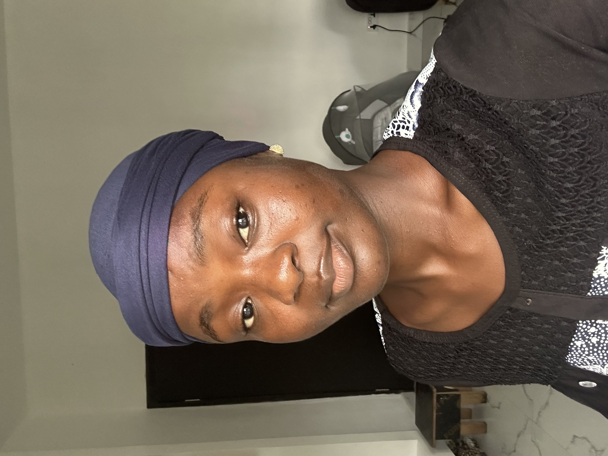

Africa's Young Climate Leaders Acting Locally.
The LeadGreen Fellowship equips emerging changemakers aged 18–30 across 54 African countries with rigorous green skills, dedicated mentorship, and real grassroots environmental missions.


Alimot Okoya • Solar Lead12-Week Track
Self-paced virtual learning with real localized field missions and peer cohorts.
Bridging Africa's Youth Ambition and Climate Action
Africa possesses the youngest population in the world and bears the greatest vulnerabilities from flooding, plastic waste, deforestation, and climate disruptions.
Yet young changemakers frequently lack the structured backing, localized curricula, and continental peer community needed to lead the transition. LeadGreen bridges that gap.
We believe leadership is not an honorary title—it is measurable community action. Our fellowship moves candidates directly from "I care about the planet" to "I delivered verifiable impact in my neighborhood."
Learn
Understand real environmental challenges affecting African communities—waste diversion, circular economics, biodiversity, and clean energy systems.
Act
Execute structured LeadGreen Missions. Fellows organize local cleanup hubs, afforestation drives, and community sensitization campaigns.
Measure
Document field evidence, log metrics, quantify waste diverted or trees planted, and submit rigorous verified reports.
Lead
Step into the pan-African leadership network, mentor oncoming fellows, and earn official, verifiable credentials.
Measurable Grassroots Impact Across 54 Nations
Our fellows do not sit in passive lectures. Each cohort undertakes physical community missions designed to be achievable and sustainable in their local communities.
A 12-Week Path From Environmental Awareness to Action
Designed to fit around university studies and work schedules. Three hours per week of self-paced materials, masterclasses, and field execution.
Environmental Foundations
Analyze the acute crises facing African regions: municipal waste logjams, ocean plastic, desertification, and climate hazards. Map problems in your immediate community.
Green Skills & Solutions
Learn practical methodologies: waste-to-energy conversion, sorting and recycling infrastructure, solar photovoltaic setups, sustainable agriculture, and climate advocacy.
Action Missions in Communities
This is where learning turns into evidence. Execute your community mission, mobilize team members, log photographic proof, and measure tangible results.
Leadership & Capstone Synthesis
Deliver final mission capstone reviews, engage in cross-continental peer feedback sessions, verify your completion credentials, and join the graduate alumni directory.
Stories From Africa's Frontlines
Read how LeadGreen graduates transformed their careers and initiated community-level climate solutions.
Frequently Asked Questions
Everything you need to know about qualifying, commitment, and costs.
Cohort 3 – 2026
Graduated fellows from Cohort 3 are actively indexed in the verified alumni directory with official credentials issued.
Cohort 4 – 2026
Applications are currently in review by the LeadGreen Admissions Committee. Successful applicants will be notified via email and WhatsApp.
Turn Climate Passion Into Measurable Leadership.
Join a continent-wide network of young African changemakers taking concrete, verified environmental action in their communities.